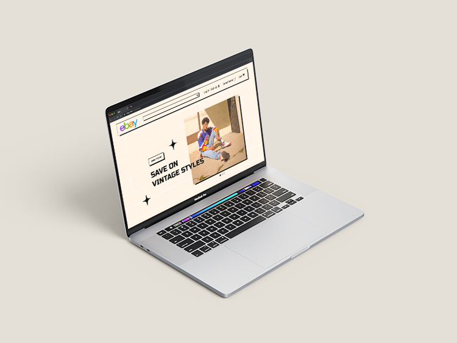

For this project, I chose to redesign eBay for a younger audience: 18 to 25 year olds. I chose young adults because eBay largely does not appeal to them, even though buying and selling secondhand goods are popular activities among that age group. The expected user for eBay currently is over the age of 25. Sites such as Depop and Grailed provide similar services to eBay, however they are more popular among 18-25 year olds than eBay. There are major differences between eBay and these websites in the visual designs and user experience. In order to redesign eBay to appeal to young adults, I wanted to create a design that is trendy, un-cluttered, and easy to use.


I explored moodboards of different color palettes and typography that are visually pleasing. Being mindful of accessiblity, I wanted to explore options that have high contrast and legibility.
Header | bold 24 pt
Med names | semibold 20pt
Form prompts | semibold 18pt
Copy | regular 16pt
After further user testing, the final font family, Lexend Deca, and final color palette are approachable, pleasing, and legible.
One challenge was including as many features as is reasonable, but that left some of the interviewees' suggestions unused. For example, linking to Mychart and chat with the user's doctor are features that I'm not sure would be possible to offer.
Another challenge was in creating the “add new” page- I wanted to include all the necessary information, which proved complicated. When talking to a subject expert, a Neurologist, they recommended I add questions that also feature on Epic systems, the software that many medical professionals use. It would be beneficial for the form to be similar to the already existing form that medical professionals are familiar with. Unfortunately, I do not have access to Epic, so I relied on what the medical professional said was important to ask.